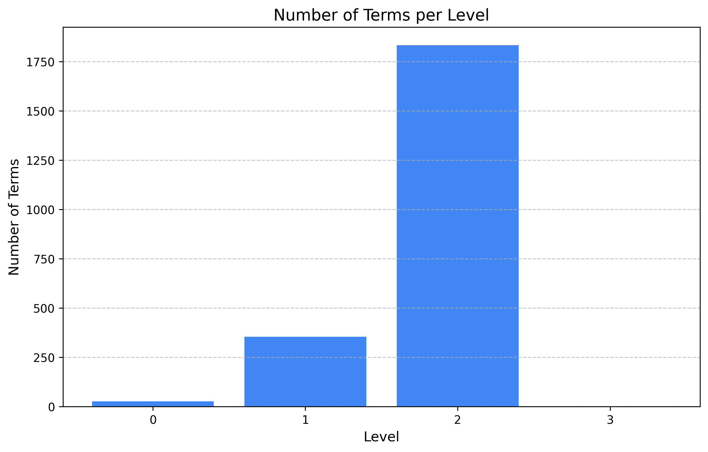
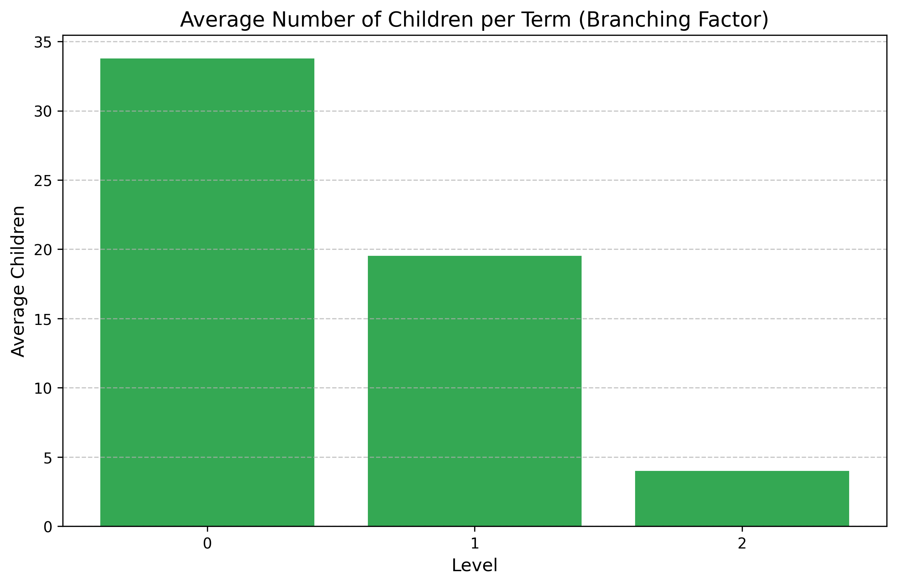
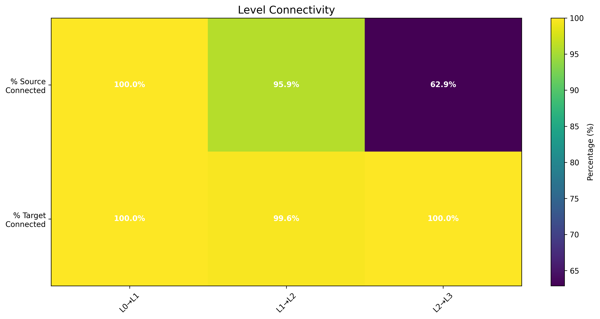
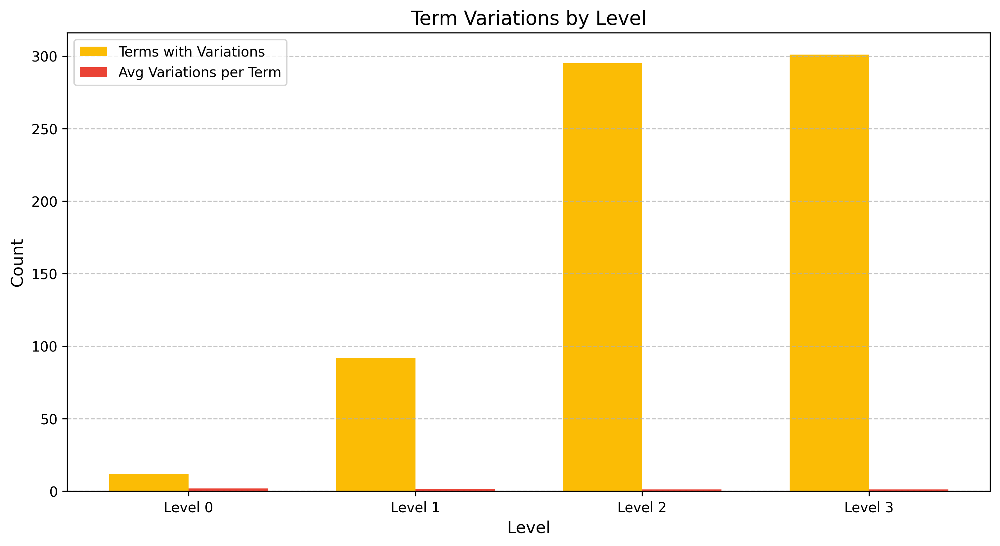

Academic Hierarchy Evaluation Report
Level Summary
| Level |
Terms |
Orphans |
Avg Children |
Parent-Child Rel. |
Terms w/ Variations |
Avg Variations/Term |
Total Variations |
| 0 |
26 |
0 |
25.38 |
0 |
8 |
1.62 |
13 |
| 1 |
354 |
0 |
15.81 |
660 |
74 |
1.55 |
115 |
| 2 |
1833 |
7 |
0.00 |
5598 |
182 |
1.16 |
211 |
| 3 |
0 |
0 |
0.00 |
0 |
0 |
0.00 |
0 |
Visualizations
Terms per Level

Branching Factor

Level Connectivity

Term Variations

Issues Detected
Orphan Terms (7)
applied physics (Level 2): Term has no parent
counseling interventions (Level 2): Term has no parent
critical legal studies (Level 2): Term has no parent
higher education law (Level 2): Term has no parent
lifelong learning (Level 2): Term has no parent
population health informatics (Level 2): Term has no parent
privacy law (Level 2): Term has no parent
Redundant Paths (5598)
3d printing (Level 2): Term has both direct and indirect paths to the same ancestor
3d printing (Level 2): Term has both direct and indirect paths to the same ancestor
3d printing (Level 2): Term has both direct and indirect paths to the same ancestor
3d printing (Level 2): Term has both direct and indirect paths to the same ancestor
academic dismissal (Level 2): Term has both direct and indirect paths to the same ancestor
academic language (Level 2): Term has both direct and indirect paths to the same ancestor
academic language (Level 2): Term has both direct and indirect paths to the same ancestor
academic writing (Level 2): Term has both direct and indirect paths to the same ancestor
academic writing (Level 2): Term has both direct and indirect paths to the same ancestor
academic writing (Level 2): Term has both direct and indirect paths to the same ancestor
5588 more issues of this type not shown...
Inconsistent Branching (41)
arts (Level 0): Term has significantly different number of children than average
humanities (Level 0): Term has significantly different number of children than average
african american studies (Level 1): Term has significantly different number of children than average
asian languages (Level 1): Term has significantly different number of children than average
astronomy (Level 1): Term has significantly different number of children than average
behavioral health (Level 1): Term has significantly different number of children than average
biochemistry (Level 1): Term has significantly different number of children than average
community health (Level 1): Term has significantly different number of children than average
computer engineering (Level 1): Term has significantly different number of children than average
cultural studies (Level 1): Term has significantly different number of children than average
31 more issues of this type not shown...
Recommendations
• Address the 7 orphaned terms by assigning appropriate parent terms.
• Review the 339 term variations to ensure they're correctly consolidated.
• Level 0 terms have a high branching factor (25.38 children on average). Consider reorganizing to create a more balanced hierarchy.
• Level 1 terms have a high branching factor (15.81 children on average). Consider reorganizing to create a more balanced hierarchy.
Methodology
This evaluation analyzes the academic hierarchy structure based on the following metrics:
- Term Distribution: Analysis of term count and distribution across levels
- Connectivity: Measurement of how well terms connect between hierarchy levels
- Branching Factor: Analysis of the average number of children per term
- Orphaned Terms: Identification of terms without proper parent relationships
- Redundant Paths: Detection of terms with multiple paths to the same ancestor
- Term Variations: Analysis of term variation patterns and consolidation